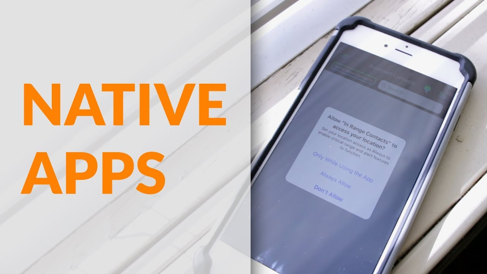
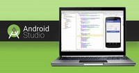
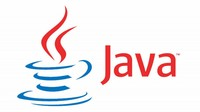

The Web
Categorie
Full Stack Development
Profiel Native App Developer

Met native App wordt een App bedoeld die speciaal is gemaakt voor mobiele apparaten zoals Android en iOS. Belangrijke voordelen van een native App zijn maximale benutting van technische componenten, features zoals camera, flits, microfoon, geolocatie, door fabrikant in mobiele apparaat gebakken, én met maximale performance.
→ zie: Wikipedia Native Apps
Tijd en Geld

Omdat een native App speciaal wordt geprogrammeerd met een versie voor Android én een versie voor iOS geeft dat ontwikkelen, en later beheren met updates, 2x twéé keer kosten tijd en geld. En na al die moeite dan nog werkt de App niét op laptops en desktops ofwel niet op Windows, macOS en Linux. Om alle apparaten af te dekken, en hoge DevOps kosten te minimaliseren, is er een trend naar andere aanpak.
Andere Aanpak
Oorsprong van Native Apps is dat vanwege zuinig verbruik van batterij en daardoor ook geen actieve koeling nodig, mobiele telefoons en later tablets gemaakt werden met ARM processor (ipv x86). Nadeel toen van ARM architectuur was slechte performance dus Android en iOS werden op die handycap getuned, en alle Apps werden speciaal gemaakt met programmeertalen voor Android en voor iOS: beiden onderstaand verder uitgewerkt.
Nu, zoveel jaar later, zijn ARM processors nog steeds zuinig in stroomverbuik maar wél veel sneller geworden! Performance is eigenlijk geen issue meer. Om die reden is er nu softwarematig meer mogelijk, vandaar het navolgende.
- Hybride Apps
-
 Voorbije jaren zijn programmeertalen ontwikkeld die 'write once use everwhere' mogelijk maken. Apps die zo zijn ontwikkeld worden hybride genoemd en kenmerken zijn: web based HTML, CSS en JavaScript, en de code wordt geinterpreteerd en executed door zelfde soort engine als die zit in browsers zoals Firefox, Chrome, Safari, MS Edge.
Voorbije jaren zijn programmeertalen ontwikkeld die 'write once use everwhere' mogelijk maken. Apps die zo zijn ontwikkeld worden hybride genoemd en kenmerken zijn: web based HTML, CSS en JavaScript, en de code wordt geinterpreteerd en executed door zelfde soort engine als die zit in browsers zoals Firefox, Chrome, Safari, MS Edge.
→ zie: Wikipedia Electron
- Progressive webApps
-
Als een hybride Apps dezelfde gebruikerservaring heeft als native Android of iOS, én voldoet aan hieronder gestelde criteria dán worden deze Progressive webApps (PWA) genoemd. Kenmerken zijn:
- Ongeacht online vs offline - de App blijft werken
- Responsive draait op elke form factor desktop, mobiel, tablet of whatever
- JS Service Worker voor pushmeldingen, achtergrond synchroniseren, cache, netwerk requests, gecentraliseerde updates
- Private en Secure door HTTPS verbinding
- Hardware toegang camera, microfoon, speaker, wifi, Bluetooth
- Gebruikers ervaring staat gelijk aan 'old skool' native App
- Installeerbaar ook zónder Google Play en Apple Store
Dus PWA's zijn webApps die éénmaal (1x) zijn ontwikkeld met éénmaal (1x) beheer, onderhoud en updates. Met "druk op knop" is er een versie voor Android én voor iOS én voor Electron, dat is Windows, macOS en Linux. Dus zo'n webApp functioneert op elk apparaten, ongeacht form factor en OS. Zie ook begin van deze guide:
→ zie: Front end vs Back end
→ zie: WebApp vs native App
→ zie: Progressive webApp (PWA)
→ zie: Native Apps vs Progressive webApps vs Algemene Verordening Gegevensbescherming (AVG)
- Decision Time!
-
Kijkend naar wat een willekeurige App zal worden geacht te doen, ofwel beoogde functionaliteit, dan kan gesteld worden dat ~80% van alle Apps kunnen worden gemaakt als een PWA. Dus voor ARM based Android en iOS én x86 based Linux, Windows en macOS. Zo'n App werkt prima op elke apparaat.
In dat geval is er geen reden om een native App te (leren) maken en kan gebruikt gemaakt worden van de 'write once use everwhere' aanpak. Zie daarvoor onderstaande profielen en videotorials.
- Profielen met Skill set
-
Basic Front End Web Developer
Full Fledged Front End Web Developer
Back End Web Developer Software
Back End Web Developer Database
Full Stack Web Developer
- Do the math
-
Gestel, niet geremd door legacy software, dan ligt het in de lijn der logica dat bedrijven en ontwikkelaars web presents baseren op basis van tools als in hierboven beschreven profielen met skill set. Het DevOps team beslaat dan met één pipeline 100% van websites en ~80% van Apps als zijnde PWA's; uitgaande van gelijke wegingsfactor waarbij een App een website ondersteund en vise versa een website een App, geeft (100+80)/2 = 90% van alles! BTW alsdan die éne pipeline is een ongekend voordeel van interoperability van resources. → zie: DevOps Pipelines
→ zie: Wikipedia Interoperabiliteit
- Check Feature plugins
-
Om te beslissen of een App native moet draaien zijn allerlei criteria zoals bestaande DevOps pipelines, legacy software, tijd en geld, bemensing, performance etc. Belangrijke factor is ook welke hardware features aangestuurd kunnen worden. Ionic en met name Capacitor kennen daarvoor plugins en zie hierna welke plugins nu al bestaan, of hoe die zelf te maken.
→ zie: Web Developer tools Ionic & Capacitor
Android native App
 Android is een mobiel besturingssysteem op basis van een aangepaste versie van de Linux kernel en andere open source software, voornamelijk ontworpen voor mobiele touchscreen apparaten zoals smartphones en tablets. Android is ontwikkeld door een consortium van ontwikkelaars dat bekend staat als de Open Handset Alliance, met Google als belangrijkste leverancier en commerciële marketeer.
Android is een mobiel besturingssysteem op basis van een aangepaste versie van de Linux kernel en andere open source software, voornamelijk ontworpen voor mobiele touchscreen apparaten zoals smartphones en tablets. Android is ontwikkeld door een consortium van ontwikkelaars dat bekend staat als de Open Handset Alliance, met Google als belangrijkste leverancier en commerciële marketeer.
→ zie: Wikipedia Android
De kern Android broncode is free open source Android Open Source Project (AOSP). Hiermee zijn varianten van Android ontwikkeld voor een reeks andere elektronica, zoals gameconsoles, digitale camera's, pc's en andere, elk met een gespecialiseerde gebruikersinterface. Enkele bekende derivaten zijn Android TV voor televisies en Wear OS voor wearables, beide ontwikkeld door Google.
- Android Studio IDE
-
 Android Studio is het door Google bestempelde officiele Integrated Development Environment en bevat een uitgebreide set ontwikkelingstools met een debugger, libraries, een mobiele telefoon emulator, documentatie, voorbeeldcode en tutorials.
→ zie: Wikipedia Android Studio IDE
→ zie: Website Android Studio download & get startedEr zijn meerdere IDE's zoals Eclipse, NetBeans en IntelliJ maar de focus en leidend is Android Studio, die hand in hand door Google wordt mee ontwikkeld met nieuwe ontwikkelingen van Android. Genoemde IDE's hebben op hoofdlijnen dezelfde technische mogelijkheden; maar het zijn specifieke details die een voorkeur geeft over de ander.
Android Studio support meerdere programmeertalen om Apps te maken voor het Android operating systeem. Talen zijn o.a. Java, C++, Kotlin en Go. Zo is de developer in staat om binnen die éne IDE omgeving meerdere technieken toe te passen.
- Welke Android programmeertaal
-
Google als drijvende factor achter Android heeft Kotlin gelanceerd als opvolger en vervanger van Java. Inmiddels is er de vraag welke programmeertaal te leren en gebruiken? Onderstaande tutorial maakt vergelijking tussen Java en Kotlin en komt met een advies.
- Java
-
 Java van de firma Oracle is een (gedeeltelijk gratis) set computersoftware en specificaties als systeem voor het ontwikkelen van toepassingssoftware en de implementatie ervan in een platform onafhankelijke computeromgeving. Java wordt gebruikt in een breed scala aan computerplatforms, van embedded apparaten en mobiele telefoons tot bedrijfsservers en supercomputers.
→ zie: Wikipedia Java
→ zie: Website Oracle Java download & get started
- Kenmerken
-
Java is een programmeertaal voor algemene doeleinden en op klassen gebaseerd, objectgericht en ontworpen om zo min mogelijk implementatie afhankelijkheden te hebben. Het is bedoeld om developers eenmaal te laten schrijven en overal te laten werken. Gecompileerde Java code kan worden uitgevoerd op alle platforms die Java ondersteunen zonder dat er opnieuw gecompileerd hoeft te worden.
Java Apps worden meestal gecompileerd tot bytecode die op elke virtuele Java machine (JVM) kan worden uitgevoerd, ongeacht de onderliggende computerarchitectuur. De syntaxis van Java is vergelijkbaar met C en C++.